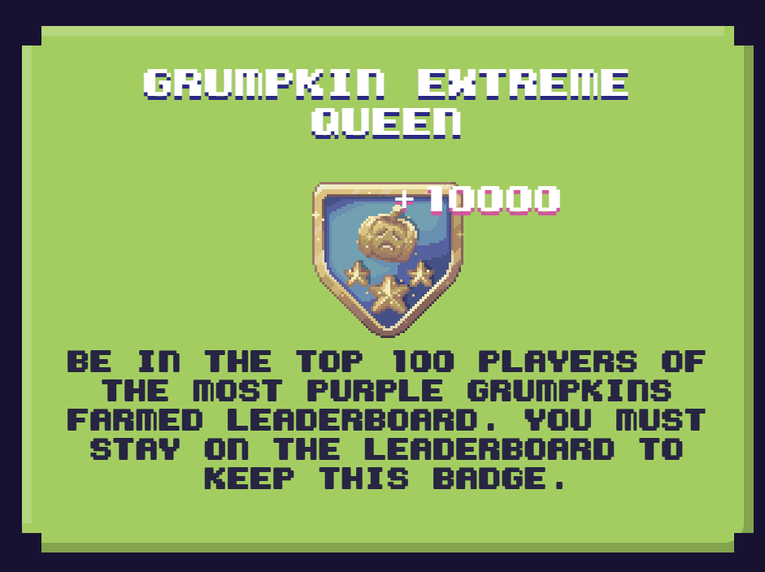

Aenean ornare velit lacus, ac varius enim lorem ullamcorper dolore aliquam.
Let me tell you how I managed to rank among the top players in the P2A event of Pixels. It was two weeks of non-stop farming, testing strategies, adjusting them on the fly, and learning every day. I finished in the top 100, and yes! I earned $15,000.
The event tested you in five different areas, and the goal was to be among the best in all of them. The categories were:
Over 200,000 players participated, and only the top 6,000 would receive rewards. I had a bit of an advantage because I had been playing for four months, so I already knew a few websites to track the best lands for finding these resources. What did I do? I opened Excel and listed over 100 lands that I had to visit at least eight times a day. Yes, it sounds crazy, but it was crucial. The hardest part was optimizing time to level up enough to farm all the resources. I was already leveled for pumpkins, but I still needed work in the other areas.
The most challenging aspect was the pumpkins. You had to plant them, water them immediately, water them again an hour later, and harvest them three hours after that. The problem? If you forgot to water or harvest them on time, they would die, and you’d lose time, money, and effort. That’s why pumpkins became my biggest challenge, but I didn’t give up. After a few days of experimenting, I developed a perfect system with multiple alarms reminding me when to water and when to harvest. This effort pushed me into the top 25 in this category.
Mining Salt was relatively easy for me, partly because I used the same lands as for pumpkins. It was quick, and since it was one of the more costly activities, there was less competition. I managed to climb to the top 50 without much difficulty.
Wax collection was the most competitive aspect of the event. Being the cheapest activity, many players opted for it. It took me five days to reach the required level, but I quickly realized how hard it would be to keep up. I decided not to focus too much on this and redirected my energy to other areas. Even so, I reached the top 100 but then relaxed a bit and finished in the top 500.
In the wood category, I reached the top 200, but it wasn’t easy. I visited over 200 lands and needed thousands of clicks to hit my goal. It was exhausting, but rewarding in the end.
Collecting eggs was undoubtedly the easiest and cheapest part of the event. I could collect them every hour, and although it wasn’t my priority, I finished in the top 200 without too much trouble.
The key to my strategy was finding continuous lands where I could farm all five resources without wasting time. This way, I maximized my efficiency and saved many unnecessary clicks. Experience also plays a big role; you need to know the game mechanics to avoid wasting time. I knew the last few days would be the toughest, and although I almost gave up 18 hours before the end, I managed to gather the strength needed to finish strong. I ended up in 96th place!
Opportunities like this don’t come around every day. Pixels had an amazing launch, with a $500 million market cap, which meant that the 1.5% allocated to the P2A was a considerable amount. It was an intense experience, full of challenges and learning, but in the end, every second spent was worth it. I would definitely do it again.
P2A (Play to Airdrop) is a special event where players compete in different areas of the game to earn rewards in the form of game tokens, which can be exchanged for money.
On average, I spent between 10 to 12 hours a day, though in the last few days, I was on for up to 20 hours a day.
Organization was essential. Websites with Pixels data were very helpful, along with Excel to track lands and set alarms to avoid missing crucial activities like watering pumpkins.
Experience helps a lot, especially if you already know the game mechanics and the best strategies. However, with good planning and dedication, anyone can give it a shot.
Absolutely! It’s a unique opportunity to earn significant rewards while enjoying the game. Just be prepared to dedicate a lot of time and effort.
Aenean ornare velit lacus, ac varius enim lorem ullamcorper dolore aliquam.

Aenean ornare velit lacus, ac varius enim lorem ullamcorper dolore aliquam.

Aenean ornare velit lacus, ac varius enim lorem ullamcorper dolore aliquam.
Sed varius enim lorem ullamcorper dolore aliquam aenean ornare velit lacus, ac varius enim lorem ullamcorper dolore. Proin sed aliquam facilisis ante interdum. Sed nulla amet lorem feugiat tempus aliquam.